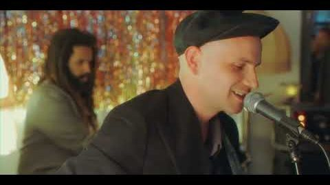
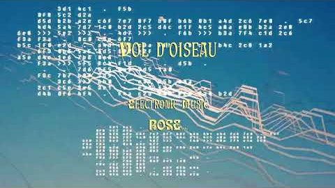

écouter6


voir6

07CONTREBANDE.S #7 - Adrian Edeline, Louis Rose, Jérôme Arrighi et Tiss Rodriguezvidéo · youtube 08Workshop Session - CD x Louis Rosevidéo · youtube
08Workshop Session - CD x Louis Rosevidéo · youtube 09Cry – live improvisation from homevidéo · youtube
09Cry – live improvisation from homevidéo · youtube- 10ringsresonatormodulartor56130gresdutkp$ô ùlvidéo · youtube

11Vol d'Oiseauvidéo · youtube 12"Entre Ciel et Fer" - Bande Son Originalevidéo · youtube
12"Entre Ciel et Fer" - Bande Son Originalevidéo · youtube